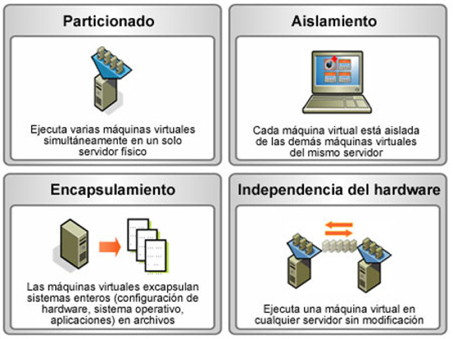
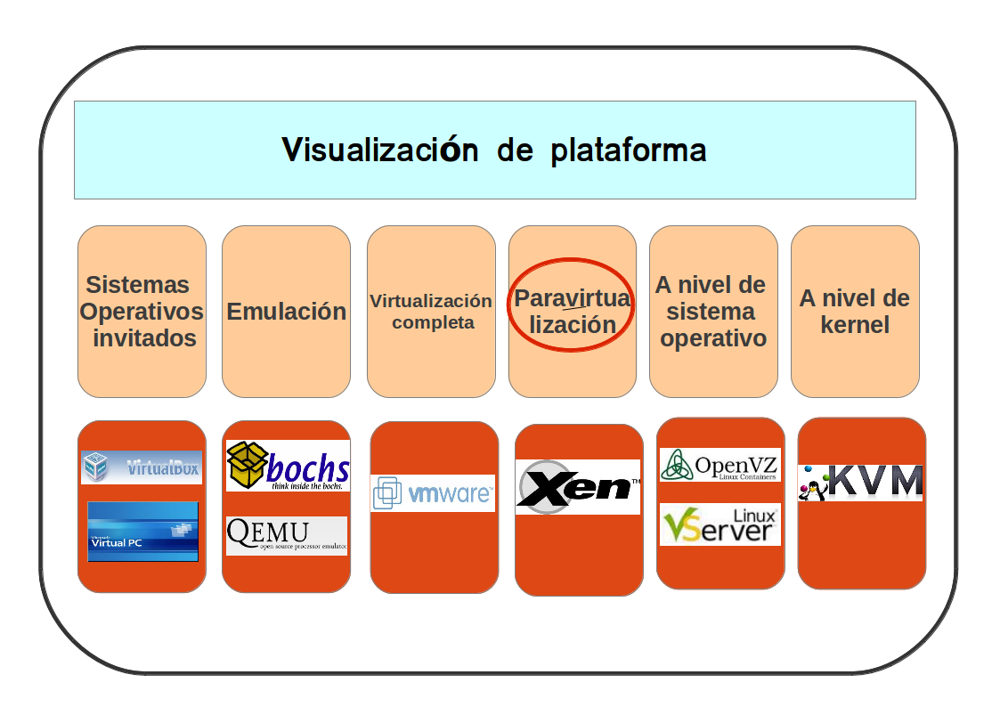
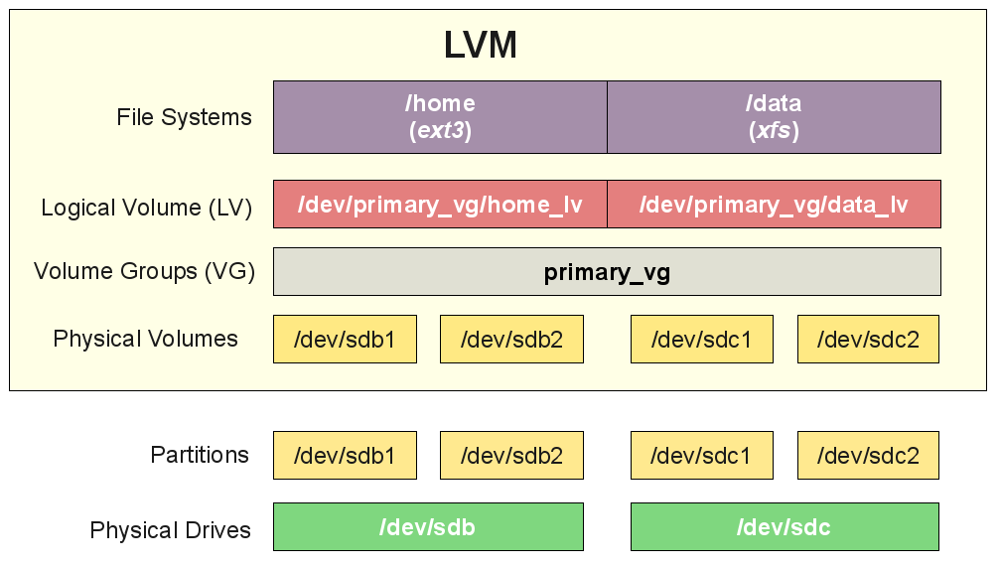
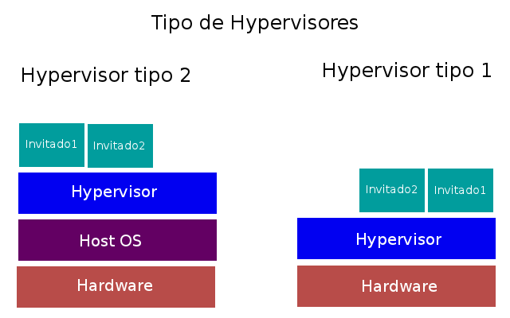
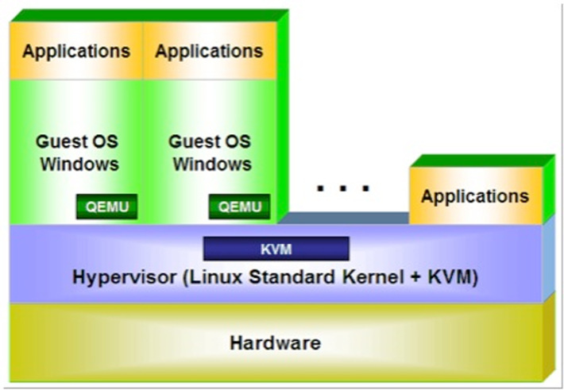
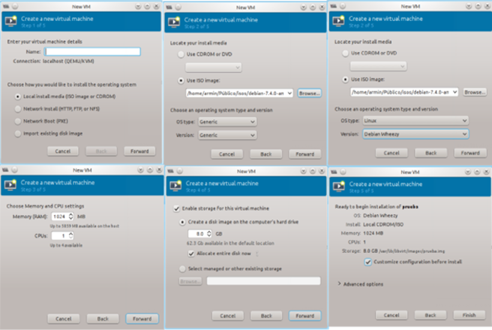
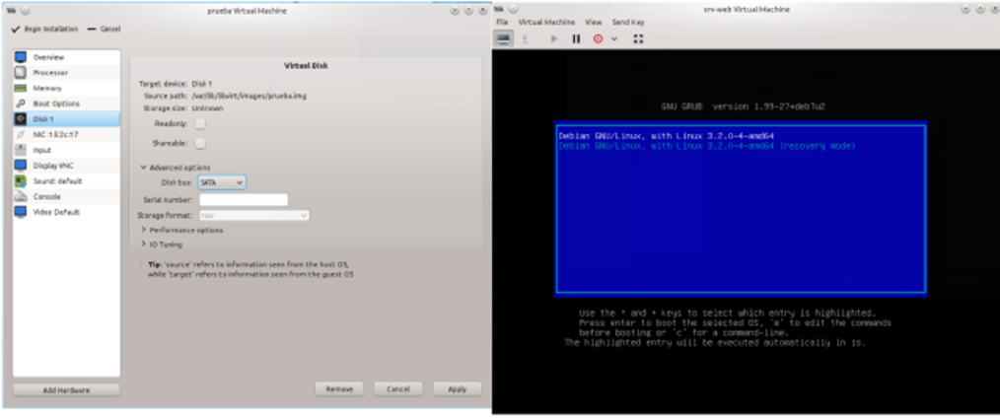

Universidad Mayor de San Andres
Sociedad Científica Estudiantil
Virtualización
¿Qué es la virtualización?
Un poco de Historia
- Durante los '60 y '70 fue una idea muy popular
- En los '80 no parece tan buena idea pero cambia en los '90
- En 1998 se funda VMware
- 2003 se lanza la primera versión de Xen
- 2005 y 2006 Intel y AMD introducen esta tecnología
- 2007 VirtualBox se libera como software libre
- 2007 KVM se integra en el kernel 2.6.20
- 2008 la empresa detrás de VirtualBox es comprada por Sun
- 2008 Microsoft lanza la versión de Hyper-V
- 2011 Se empiezan a incluir partes de Xen en el kernel 2.6.37
Características
Tipos de virtualización
- Virtualización por plataforma
- Emulación o Simulación
- Virtualización nativa o completa
- Virtualización asistida por HW
- Paravirtualización
- Otros más
- Virtualización por recursos
- Discos RAID y gestores de volumenes (LVM)
- Virtualización de almacenamientos (SAN)
- Redes privadas virtuales (VPN)
- Cloud computing
- Otros más tambien
Virtualización por plataforma
Virtualización por recursos
¿Qué es un Hypervisor?
Hypervisor
Tecnologías de Virtualización
- KVM: Kernel Based Virtual Machine
- http://www.linux-kvm.org/page/Main_Page
- Xen
- http://www.xenproject.org/
- VirtualBox
- https://www.virtualbox.org/
- VMware Workstation
- http://www.vmware.com/es/products/desktop virtualization/workstation/overview.html
- Qemu
- http://wiki.qemu.org/Main_Page
- LXC
- https://linuxcontainers.org/
KVM/Qemu
KVM/Qemu

Características
- KVM permite ejecutar máquinas virtuales utilizando imágenes de disco que contienen sistemas operativos sin modificar.
- Cada máquina virtual tiene su propio hardware virtualizado.
- Posibilidad de sobreasignar recursos físicos para huéspedes virtualizados.
- Opción de virtualización de código abierto.
- Se compone específicamente de:
- Módulo de kernel, kvm.ko, que proporciona la infraestructura de virtualización de base.
- Módulo de procesador específico, kvm intel.ko o kvm amd.ko.
- KVM utiliza Virt-Manager como administrador de máquinas virtuales y Qemu como hypervisor.
Limitaciones
- Sobre envío de memoria
- Sobrecarga de CPU
- Dispositivos virtualizados SCSI
- Dispositivos IDE virtualizados
Crear una maquina virtual desde terminal
ISO_PATH=/path/to/debian-testing.iso
KVM_HOSTNAME=prueba.com
KVM_RAM=1024
KVM_CPU=2
KVM_DISCO=10
KVM_PATH=/vm/p-prueba.img
sudo virt-install --connect=qemu:///system --name=${KVM_HOSTNAME}
--ram=${KVM_RAM} --vcpus=${KVM_CPU} --check-cpu --disk path=${KVM_PATH},
size=${KVM_DISCO} --cdrom=${ISO_PATH} --vnc --noautoconsole
--os-type=linux --os-variant=debianwheezy
--accelerate --network bridge=br0 --hvm --autostart
Crear una maquina virtual desde virt-manager
Al final

Conclusión
Gracias
Bibliografía
- http://www.linux-kvm.org/page/Main Page
- http://en.wikipedia.org/wiki/Hardware virtualization
- http://en.wikipedia.org/wiki/Virtualization
- http://www.ibm.com/developerworks/ssa/linux/library/l-kvm-virtual- server/index.html
- http://es.wikipedia.org/wiki/Kernel-based_Virtual_Machine
- http://es.wikipedia.org/wiki/QEMU
- http://wiki.hacklab.org.bo/index.php?title=P%C3%A1gina_principal